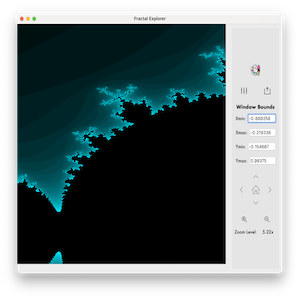

Projects
Task Assigner
This project is a Qt application created for CS 100: Software Construction at UC Riverside. It was created by a group of 3 students, myself included, using the Composite, State and Strategy pattern. The app is cross platform with a Mac executable available in the release.
View Project

Fractal Explorer
This program serves as a final project in Discrete Structures for Riverside City College. The purpose of the app is to demonstrate understanding of recursive sequences and series as well as sets. This project uses the recursive function discovered by Benoit Mandelbrot, , and renders values in the complex plane.